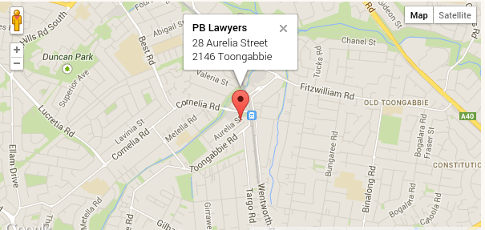

Lawyer Profile: Legal practice, Maritime & Contract law
Being in the maritime industry for 30 years combine with being as a solicitor/lawyer since 2011 gives the clients enormous business edge from around the world.
Legal Services: A broad range of practice areas
Elango Kasi has advised extensively over many years corporate, commercial and individual clients on a wide range of maritime law issues. This assistance has included work on:
Maritime laws
And also
Testimonials
Elango is a solicitor who readily volunteered his services to us to assist the mainly poor and ethnically diverse residents of Toongabbie NSW and the surrounding area. This he did in a professional manner and with good humour. He assisted with a wide range of matters that reflected the diversity of our clientele. Elango commenced with us as a pro-bono Solicitor in August 2011 till he left to take up a position in Pert. Michael Doyle - Toongabbie Legal Centre
We found Mr.Kasi to be proficient in the areas of Law covered by this firm. He was punctual and able to work diligently and unsupervised. IStella Papantoniou - Papantoniou Blake Lawyers
Mr.Kasi was always punctual and courteous both to other members of the firm and to clients. Beverley Boyle - D.M. Roberts & Co
